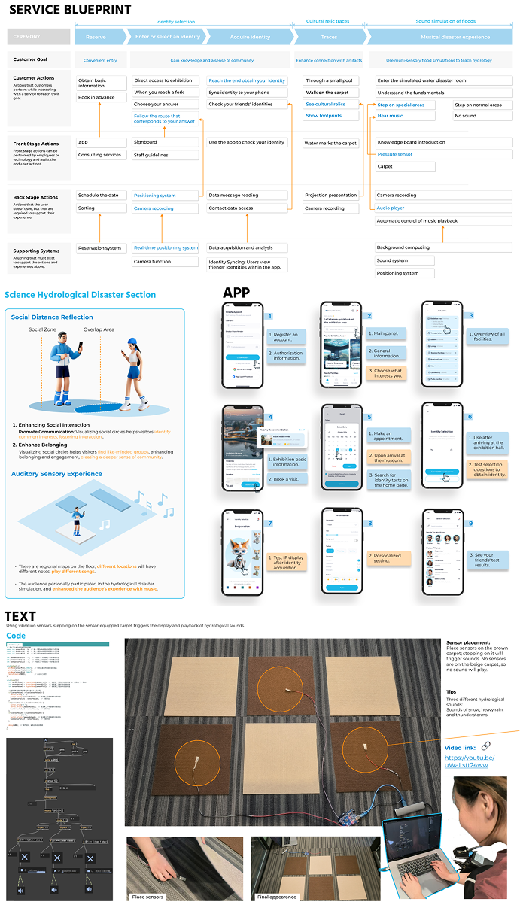
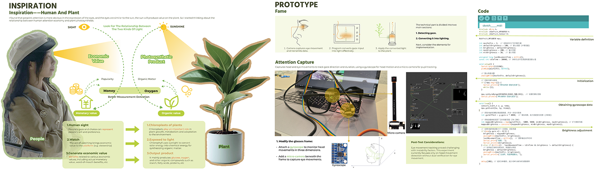
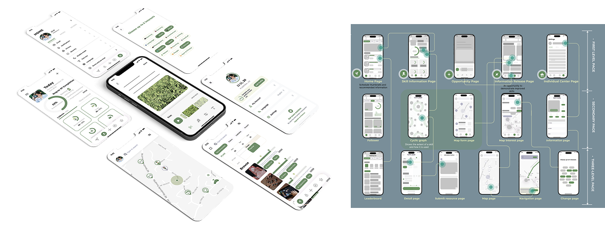

Project 1
Hydrology Museum

Project 2
Attention EconomyThis project visualizes how human attention creates value in the digital age. Using a plant-based installation, it converts attention into light, symbolizing energy flow and value creation. It offers a tangible reflection on the attention economy, linking digital behavior to natural processes.

Project 3
UI / App DesignThis UI design uses green as the main color, highlighting the theme of environmental sustainability. The creative focus goes beyond material recycling, exploring the cyclical flow of knowledge and human capability as part of a broader sustainable mindset.
